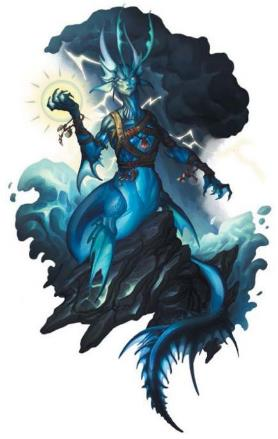

雷霆海中被拉玛尼亚所影响的人鱼和原初伟力与位面力量具有深刻的联系。这些人鱼管理着水下的显能区域，其中许多能够引导德鲁伊魔法。作为DM，你可以让雷霆还中遭遇的人鱼掌握一个来自德鲁伊法术列表的戏法。
人鱼唤风使能够感知周围的浪潮，水下的洋流和海上的风暴，并能以这股力量对付威胁他们人民的敌人。一群风暴使能够一同协作，令整只船队倾覆。最强大的风暴使则有比这里展示的更可怕的力量：人鱼们讲述他们的故事，他们能够号令海中百兽，并变化为强大的章鱼或巨鲸。
水域卫士Warden of the Water.大部分人鱼风暴使希望维持他们国度的平衡。如果那些林中的守护者一般，他们努力保护自己的国度免遭外界的威胁，也保护愚蠢的外来者免受深海和其守卫的显能区域的伤害。然而，也有些风暴使认为，一切对他们水域的闯入行为都是必须受到惩罚的冒犯。
德鲁伊语言Druid Speech.风暴使知晓德鲁伊的语言，他们相信这是世界自身的语言。大部分风暴使都会和同样说德鲁伊语言的生物好好交谈，但他们同样对对付有着很高的期待。一位风暴使或许会请求一位异乡的德鲁伊帮助对付非自然的威胁或在一场本地的争论中充当调停者。

中型类人生物（人鱼），绝对中立
AC：15（天生护甲）
HP：156（16d10+80）
速度：10尺，游泳40尺
力量11（+0） 敏捷15（+2） 体质14（+2）
智力13（+1） 感知17（+3） 魅力14（+2）
豁免：体质+5，感知+6
技能：自然+4，察觉+6，生存+6
感官：被动察觉16
语言：水族语，通用语，德鲁伊语
挑战等级：8（3900 XP）
水陆两栖Amphibious。风暴使可以在空气和水中呼吸。
天生施法Innate Spellcasting。风暴使的施法能力是魅力（法术豁免DC
14，法术攻击命中+6）。它可以天生施展以下法术，不需要任何相应的法术材料成分：
每项3/日：大漩涡maelstrom，雷鸣波thunderwave（以5环施展），潮涌tide wave，碧水球watery sphere
每项1/日：连锁闪电chain lightning
动作Actions
多重攻击Multiattack。风暴使进行三次闪电鞭挞攻击。
闪电鞭挞Lightning Lash。近战法术攻击：命中+6，触及15尺，单一目标。命中：14（4d6）闪电伤害。
反应Reactions
雷霆叱呵Thunderous Rebuke。当另一个60尺内风暴使可见的生物对风暴使造成伤害时，它能够引导风暴的魔法作为还击。造成伤害的生物必须成功通过一次DC14的体质豁免，否则受到11（2d10）雷鸣伤害并应击倒地。